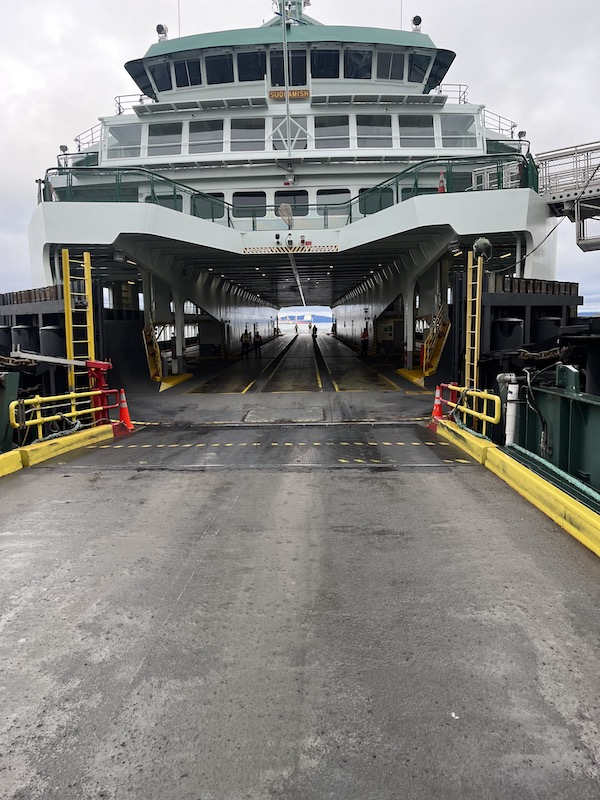
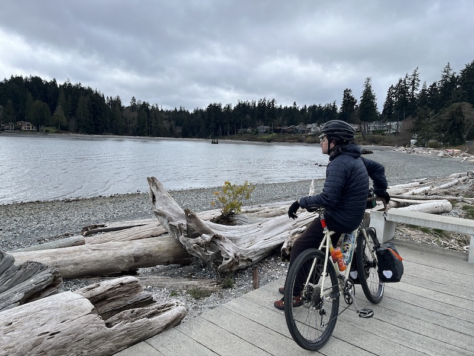
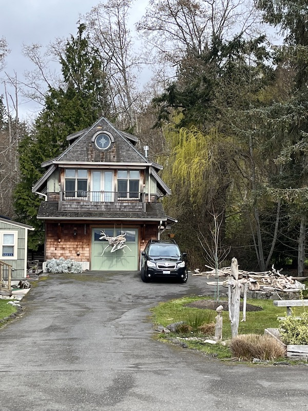
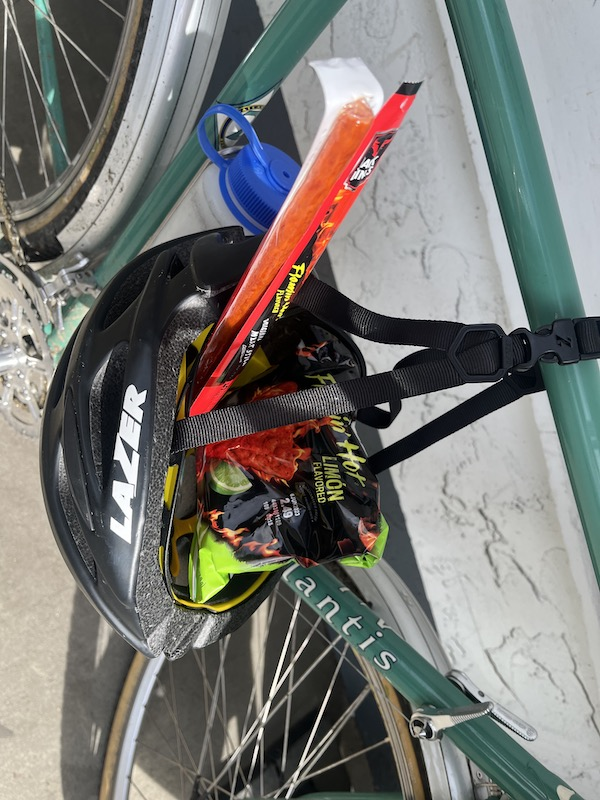

i woke up at like 7:30 knowing i had to catch the 9:30 ferry to bainbridge, but i move like slug on dreary sunday mornings. Moreover, someone salted me with a midnight shot of horseradish vodka. needless to say by the time i met up with graham in cap hill we had 13 min to sprint down town. here's graham heroically running down a mountain of stairs with his bike on his shoulder.
i mentally gave up on the idea we were going to make the ferry and let skate brain take over. had to take a photo of a new spot to return to...

we made it to the ferry with time to spare, but only because someone's car died on the ferry and the crew had to push it off...
tommy and jaytee hooked me up with a lil snack bag the week prior. legendary delivery with a bahn mi inside by jaytee. i used it as my lil toy fisheye camera holster for the ride.



felt good to get some cool sound air on the face at 10:00 am. the chance of rain for the day seemed to keep folks from packing onto the island in cars and on bikes.

We saw this bond villain modern house on the waterfront neighboring this funky driftwood sculpture laiden home. as these modern boxes tend to ignite, a conversation on architecture was sparked for a couple miles. for a time i was enamored by modern architecture as those founding fathers were some sleek salesman on their movement. i've pulled back a bit from it after finding myself seeking out the old charm of brick apartments and lugged bikes. seeing ultramodern houses multimillion dollar waterfront homes and design within reach storefronts always gives me lil internal laugh after reading essays by walter gropius about how his intentions were to make mass produce well designed items and home designs for the common person.

a mile or two down a gravel road we found this assuminly affordable box home. is this what walter was after? looks funtional, practical, and devoid of ornamentation to me.


plenty of ornamentation around the island on this route.


enough musing on architecture, back to trails...


the route is a mix of short neighborhood greenbelts and dedicated bike trails. a mix of quick descents and steep climbs. i think the trick was hangin out in my front low gear for when those climbs sneak up around the corner.

mossy chandeliers.


we took a pondside cider break at battle point park. found this pump track to mess around on!


those hills stoked some hunger for some nutritious snacks.


some graffitti admiration led to the discovery of a hidden skatespot. a rare sackable mini slappy rail.
finishing up the ride aling the water. how often do you get ride on some wild shit like this?
had an obligatory final destination of hi life. as we pulled up, the rain finally came. graham and i inhaled a couple of beers and rice bowls as we waited for the next ferry.
we thought we hit a break in the rain when we rolled down the hill to the line for the ferry. got caught in some hail. in another round of luck, we got the rare ferry with the cafe open and got a final warm up.
with what little engery we had left, we strung our bikes on our shoulders one last time to catch the ol' ski lift to cap hill. if you made it to the end, thanks for reading! till next time.